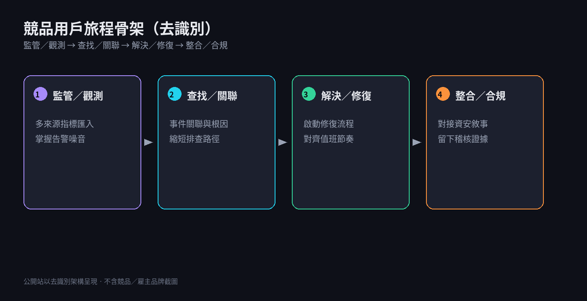
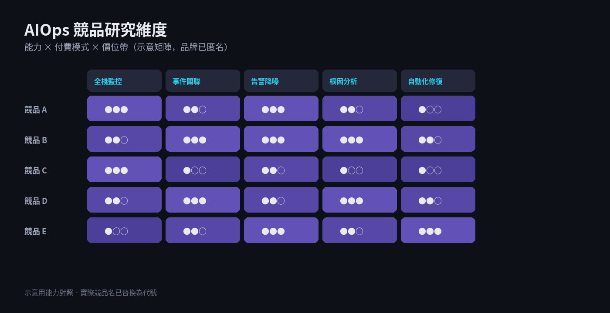
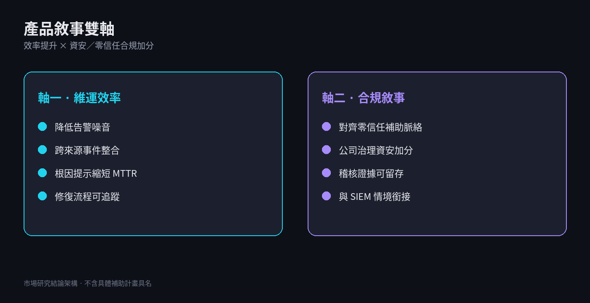
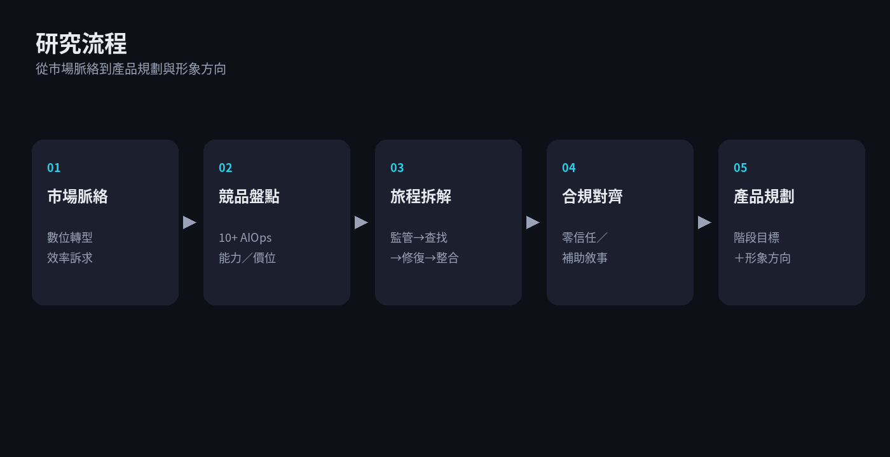

競品與雇主產品截圖含大量品牌識別，本站以旅程架構與文字敘事呈現，未嵌入原始截圖。
問題
告警噪音與跨來源整合不足；產品需同時對齊效率與資安合規敘事。
解法
競品盤點＋用戶旅程拆解；對照零信任補助脈絡，收斂階段目標與形象方向。
成果
10+ 競品矩陣、多份旅程圖，以及可對外說明的雙軸產品敘事。
- 整理 10+ AIOps 競品矩陣（特色／付費／價位帶）
- 產出多個競品用戶旅程圖（監控→告警降噪→修復啟動）
- 對齊零信任補助與公司治理資安加分敘事
- 完成產品形象／logo 概念說明（公開時需去品牌）
視覺敘事

競品用戶旅程骨架（去識別）

能力矩陣示意：監控／關聯／降噪／根因／修復

產品敘事雙軸：維運效率 × 合規加分

研究流程：脈絡 → 盤點 → 旅程 → 合規 → 規劃